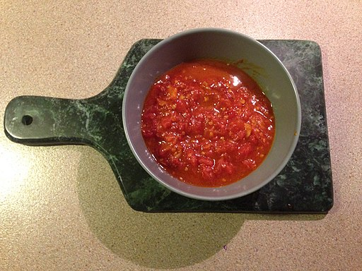

Pasta Sauce

Description:
This is a super easy easy pasta sauce that is really delicious!
Ingredients:
- 2 cups peeled San Marzano tomatoes
- 5 tablespoons unsalted butter
- 1 onion peeled and cut into halves
- salt and sugar to taste
Tools Needed:
- large pot
- large wooden spoon
- knife
Steps:
- cut onion in half and peel it
- place onion cut side down in the pot
- add in tomatoes, butter, and a large pinch of sugar in the same pot
- mix a little and set heat of stove to simmer, mix periodically to prevent burning
- cook for 45-60 minutes until fat floats free, then add salt and mix
- remove onion and serve!
(Back to top!)(Home!)